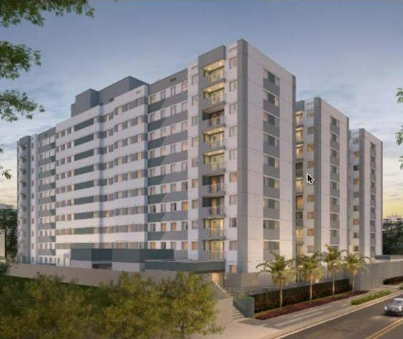

Minha Casa Minha VidaConstrutora parceira
Cidade Lapa Perdizes
Cury · Lapa, São Paulo
a partir deR$ 242.862
Lançamento (jan/2026)Entrega dez/2031
Sobre o empreendimento
2 torres, até 1 suíte, até 1 vaga. Rua José Maria de Faria.
- Quartos
- 2
- Metragem
- 34 a 46 m²
- Entrega
- dez/2031
- Lançamento
- Jan 2026
- Pronto, aprox.
- Dez 2031
Fase da obra
Breve lançamentoLançamentoJan 2026Em construçãoProntoaprox. Dez 2031
O percentual de avanço só aparece quando a construtora divulga. Quando não aparece, pedimos a ela e atualizamos aqui.
Diferenciais e lazer
- Bar
- Beach tênis
- Brinquedoteca
- Churrasqueira
- Coworking
- Easy market
- Espaço beauty
- Espaço gourmet
- Espaço yoga
- Espaço zen
- Fitness
- Lavanderia
- Pet care
- Pet place
- Piscina
- Playground
- Quadra
- Redário
- Rooftop
- Salão de festas
- Salão de jogos
- Sauna
- Solarium
- Sport bar
Localização
Lapa, São Paulo.
Construtora
Cury. Construtora parceira da Moraí.
Outros empreendimentos
- Cidade Lapa PompéiaParque Residencial da Lapa · sob consulta
- Vivaz LapaLapa · sob consulta
- Villa PioLapa · sob consulta
- Reserva SacomãJardim Clímax · sob consulta
Imagens, preços e condições são ilustrativos e podem mudar sem aviso. Confirme disponibilidade, valores e número de registro da incorporação com a construtora antes de qualquer decisão.